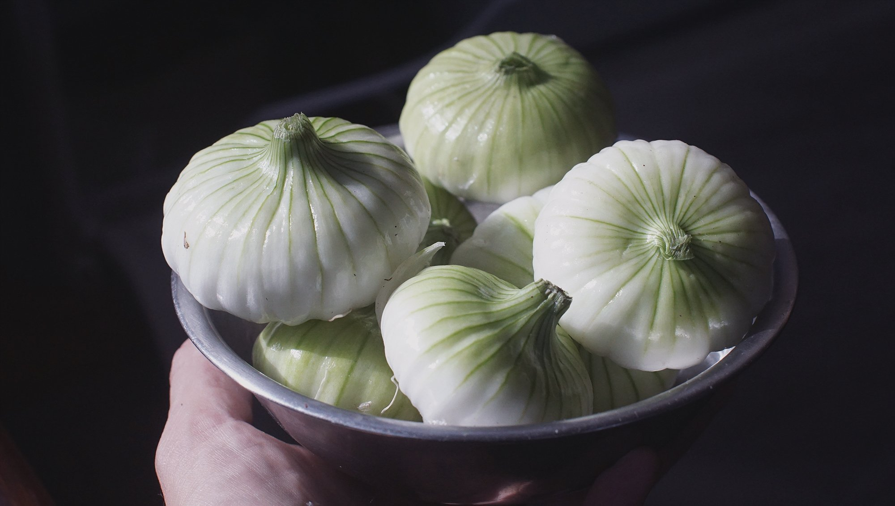
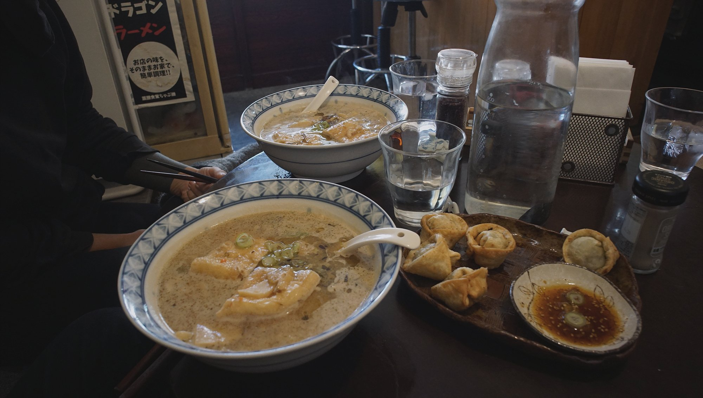
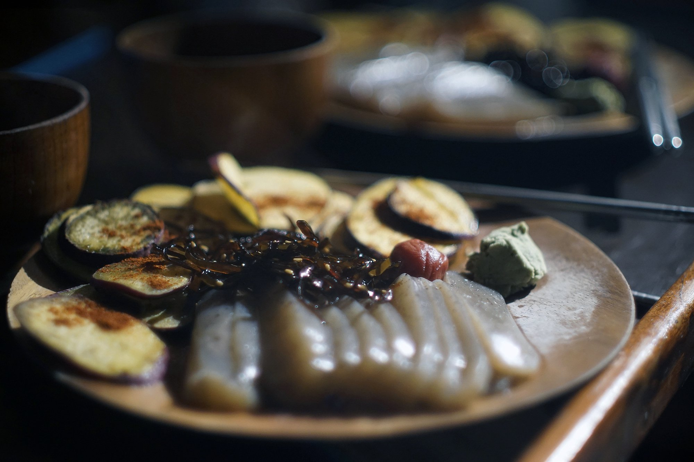

vegan in japan
- introduction
- useful vegan words
- vocabulary of non-vegan items
- phrases
- onigiri
- vegan ramen
- japanese vegan ingredients
- finding vegan restaurants
- japanese vegan kombini
- coffee
- general tips
introduction
Being vegan in Japan is possible, but requires learning some basics. Below is a short list of kanji, phrases and words to remember when ordering food or translating items on packacking.
This list is long and the kanji aren't all easy to remember, but the more you translate the more you'll learn to recognize them. An obvious great way to avoid animal products is to not buy pre-packaged foods, but that is not always possible, so here goes:
useful vegan words
- ビーガン (biigan) vegan
- やさい (yasai) vegetables
- 乳豆 'tounyuu' soy milk
- 大豆 'daizu' means soybean
- 昆布だし 'konbudashi' means seaweed stock
- 精進料理 'shoujin ryouri' buddhist style food
- 豆タンパク 'mame tanpaku' bean protein
vocabulary of non-vegan items
- 乳 'nyuu', if used alone, is cow's milk
- 牛乳 'gyuunyuu' cow's milk
- 粉乳 'funnyuu' powdered milk
- 全粉乳 'zenfunnyuu' whole milk powder
- 乳頭 'nyuutou' milk sugar, lactose
- ミルク 'miruku' milk
- チーズ 'chiizu' cheese
- マヨ 'mayo' mayonnaise
- 卵 'tamago' egg
- 卵白 'ranpaku' egg white
- 肉 'niku' meat
- ほんだし 'hondashi' means bonito fish stock
- 魚 'sakana' fish
- はちみつ ”hachimitsu' honey
- ほたて 'hotate' scallop
- 貝 'kai' shellfish
- 烏賊墨 'ikasumi' squid ink
- 烏賊 'ika' squid
- 海老 'ebi' shrimp
phrases
Without fish, meat, eggs and milk please.
- 魚、肉、卵とミルク無しおねがいいします。
- さかな、にく、たまご と ミルク なし おねがいします
- sakana, niku, tamago to miruku nashi onegaishimasu
Is there any vegan food?
- ビーガンの食べ物はありますか。
- ビーガン の たべもの は あります か
- biigan no tabemono wa arimasu ka
Vegetables only please.
- 野菜だけおねがいいします。
- やさい だけ おねがいします。
- Yasai dake onegaishimasu.
Is there any egg in this?
- これには、卵は、はいっていますか。
- これ に は、たまご は、はいっています か。
- kore ni wa, tamago wa, haitteimasu ka?
Is there anything on the menu that doesn't have meat?
- メニューの中に、お肉が入っていないものは、ありますか。
- メニューのなかに、お にく が はいっていない もの は、あります か。
- menyuu no naka ni niku ga haittenai mono wa, arimasu ka.
I am vegan.
- ビーガンです。
- biigan desu.
I don't eat meat.
- 肉食をべません。
- にく を たべません。
- niku wo tabemassen.
onigiri
Vegan onigiri exist in Japan, it's only a question of reading the tags and identifying them properly. Here is a list of the ones to look for:
- 梅 or うめ 'ume' - pickled plum.
- こんぶ or 昆布 'konbu' - seaweed.
- 塩むすび 'omusubi' - plain rice, salted.
- 焼きむすび ”yakimusubi' - grilled onigiri with soy sauce.
- 赤飯 'sekihan' - red bean.
vegan ramen
We have two recommendations of ramen places in Tokyo:
japanese vegan ingredients
Nagaimo 長芋
This tuber is a good egg alternative when baking both sweet and savoury dishes. When grated, it becomes slimy and thick and can be used as a binding agent in many recipes. Nagaimo imparts little flavour. It is perfect for okonomiyaki.
Fu 麩
Fu, wheat gluten or seitan, is widely used as a meat alternative. It has a chewy stringy texture, and is found in many forms. Fu looks like dry bread cut into small discs. It's possible to buy gluten flour to make it at home. It is also possible to extract the gluten from the flour, but it requires a lot of water and time. You can use fu to add bulk to soups, and the flour can be used to make sausages and a variety of faux-meats.
Konnyaku こんにゃく
A potato that is processed into a jelly-like substance, it can be used to make faux-sashimi and is delicious with soy sauce and wasabi. It's low calorie, and high in fiber.
Kanten かんてん
Kanten, or agar agar, is made from red edible seaweed and can be used instead of gelatin in jelly-desserts. It can also be used to make faux-cheese.
finding vegan restaurants
japanese vegan kombini
As of Dec 3 2019, a vegan kombini called Vegan Store ヴィーガンストア opened in Tokyo’s Asakusa neighborhood. It offers a variety of vegan food products, but with a Japanese twist.
Where is Vegan Store?
- Address: Tokyo-to, Taito-ku, Nishi Asakusa 2-25-9
Read an article about it on Japan Today.
coffee
In most cafes, even in 2020, cow's milk is more prevalent. You'd think that in Japan soymilk would be widely adopted as a drink, but primarily used in cooking. Some cafes offer soymilk, but like in other countries they'll charge you extra for it.
If you walk up to a vending machine that sells canned coffee, you'll see many varieties but almost all have milk in them, all, except coffee labelled as 'black' like 'Boss black coffee'. Drinking black coffee is always a safe bet.
general tips
Black chocolate isn't true black chocolate, as it always has milk powder in it. I've yet to find a Japanese brand that doesn't.
When buying pre-packaged granola or cereal, be careful because they often contain milk products (even if isn't clearly visible). Some convenience stores sell snacks and have little illustrations on the front that tell you which allergy-prone item is present. Most have milk in them, but sweets like karintou do not.
In some restaurants, ordering a dish called 'Yasai kare' or 'Vegetable curry' doesn't mean there won't be meat in it, they sometimes add it anyway. When ordering it's better to ask if there is meat or fish in it.
Buying bread that doesn't have added milk, egg or butter is difficult. It's possible to find, but finding them requires patience as this article attests.